Story of my self-printed books
I still remember at the end of entry #28 of my blog that I said I’m currently trying myself of ‘book designing and printing’. Well, here it is! With this, I think I can held my head high and say with confidence that I know a thing or two about book designing and things beyond that.
As I was in total boredom being stuck at home doing nothing, I decided to search for some good books to read. Then, I remembered baka-tsuki.org, a wiki page that hosts (and linked to) some fan-translated light novels. And so, I found something to do at home.
I don’t really like the idea of reading books straight from a computer. It could be slightly better if I own a tablet but I don’t. So, to read Durarara!! light novels that I found at baka-tsuki with best experience, I decided to print that book out (Yup, physical book are way better than e-book!). At that time, I think it was a good idea given that the series had already been finished translated (I thought. Later after printing Book 6, I’ve noticed that Book 11 and 12 aren’t fully translated yet. T.T ). So, I started this book printing project to try to reduce my boredom.
(Oh, Durarara!! is currently being officially translated and published by Yen Press so it has been taken down from the site due to legal concern. I just got lucky to save all translated works into my hard drive just before its deletion. I think it’s okay if it just being used personally though..)
So, this is how I do the project :
The tools
- Various kind of papers for different purposes
- 80gsm A4-sized paper: used to print full-page illustration on
- 180gsm A4-sized paper: for making the book cover and sleeve
- Newsprint paper: to print out the rest of the book
- Printer (well, duh..)
- Latex glue
- Cutter (or a cutting board will make life far more easier)
- Paper clips (big size to hold up the papers while gluing and binding process)
Try 1: Durarara!! x4
Well, clearly it’s not my best work since I’ve just started the project and still experimenting things. For the design part, I’ve just print out the PDF made by the translator so I didn’t touch anything of it. I thought I should concern more of how to make the printout looks like a real book - like the books that being sold at the bookstore. |
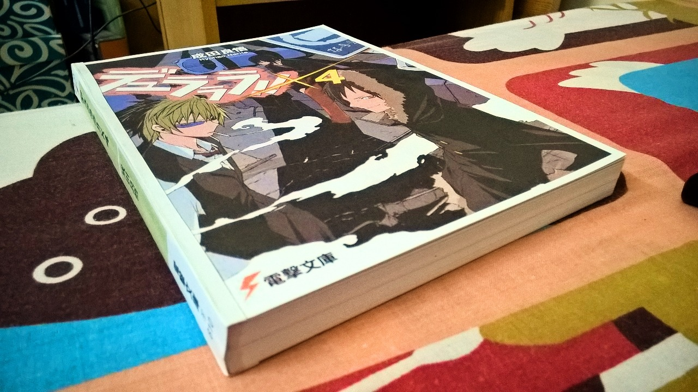 |
Try 2: Durarara!! x5
After finished reading Durarara!! x4, I started to take things to a greater height. I found the scans for the original Japanese version of the books so that helps with the book design a lot. With that, I’ve got a better quality of cover and illustration - making it more like a real book than x4. Now, I’ve got the real back cover (I’ve printed x4 back cover with just the publisher logo at the center of it so that it would not look empty) and inner parts of the cover printed and also I’ve hidden the book’s spine under the cover for a better looking book than x4. |
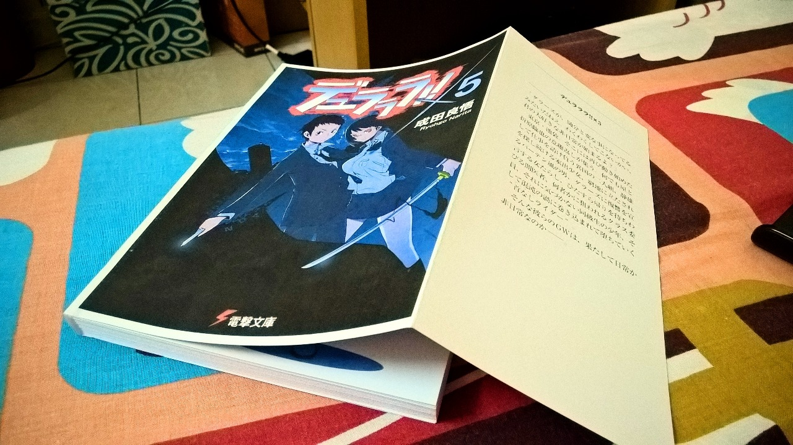 |
Back cover for Durarara!! x4 (left) and Durarara!! x5 (right) after I downloaded the scans of the original light novel. |
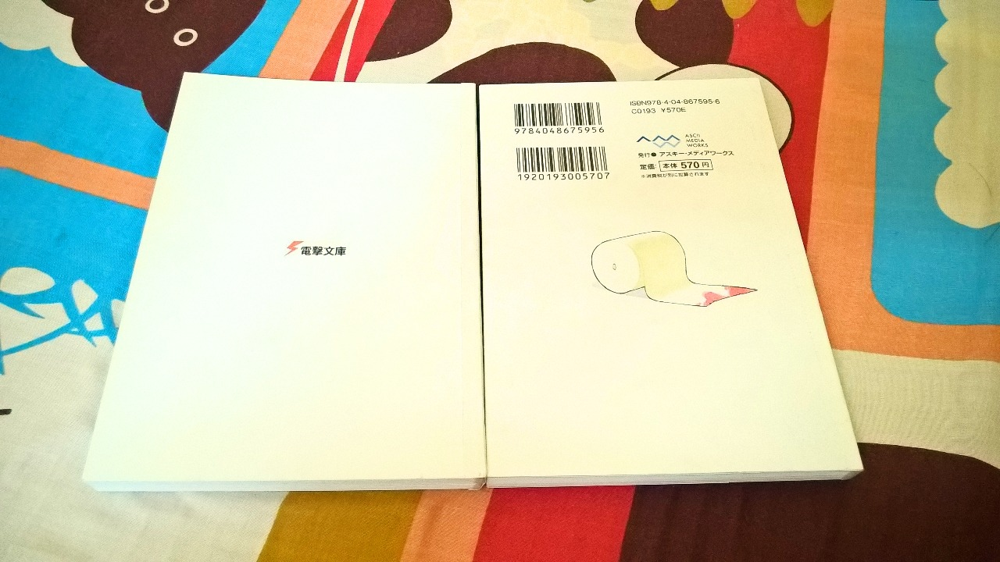 |
Try 3: Durarara!! x6
Normal 80gsm A4 paper is heavy so I’ve changed the material to newsprint paper (the recycled paper used to print newspaper). That makes the book weigh lighter but sadly the paper is too thin and could be ripped easily unlike the paper used in paperback novel - need to be extra careful handling the book now. Also, the book has both sleeve cover and hard cover now - making it more like the original light novel. I’ve forgot to hide the book spine under the hard cover this time but everything is hidden under the sleeve cover in the end. |
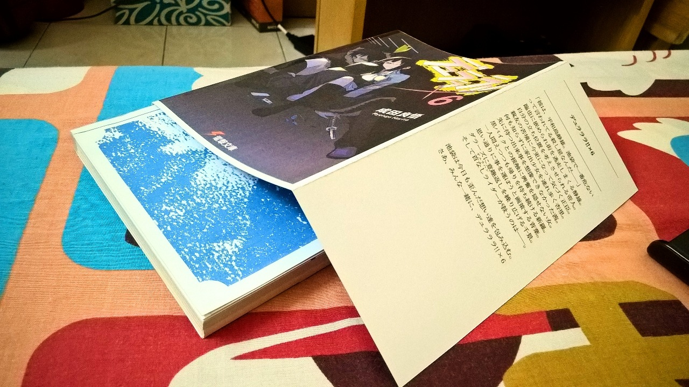 |
Try 4: Durarara!! x7
I think I’ve getting the hang of the book binding part now so let’s do the book designing starting with this volume. I used Calibri, 12pt, bold and italicize for the chapter title and Calibri, 9pt with 1.15 line spacing for the body. I’ve also made a header in each pages with page number at the bottom-center. After printing it, I noticed that although the line spacing is fine (not too tight as to give me some breathing spaces while reading it), the font was a bit too small. I’ve make sure to hide the book spine this time but the decision to use 120gsm A4 paper for sleeve cover wasn’t a good one - the paper wasn’t strong and thick enough to withstand my sweaty hands after holding it for a long period of time. |
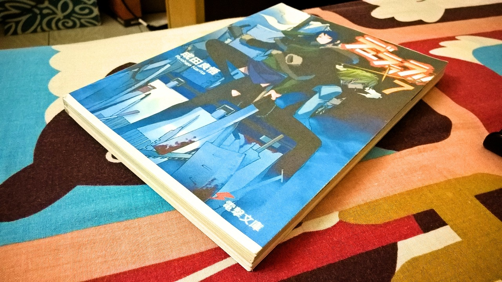 |
Try 5: Durarara!! x8
This is, I think, the best one I’ve made so far (but still things can be improved more). I changed back the sleeve cover to 180gsm A4. As for the book design, I still didn’t change the font size as I was trying to save paper and try not to exceed 300 pages. I used 80gsm A4 for pages with illustration as it can withstand heavy printing better than newsprint paper and also it could be used as a ‘bone’ to keep all the newsprint paper pages tidy and in place before I apply the glue (it was hard to tidy up the newsprint paper before binding as it was too soft and thin). Also, with thicker 80gsm A4 paper, I have more confidence to max out the illustration size right up towards the edge of the paper. |
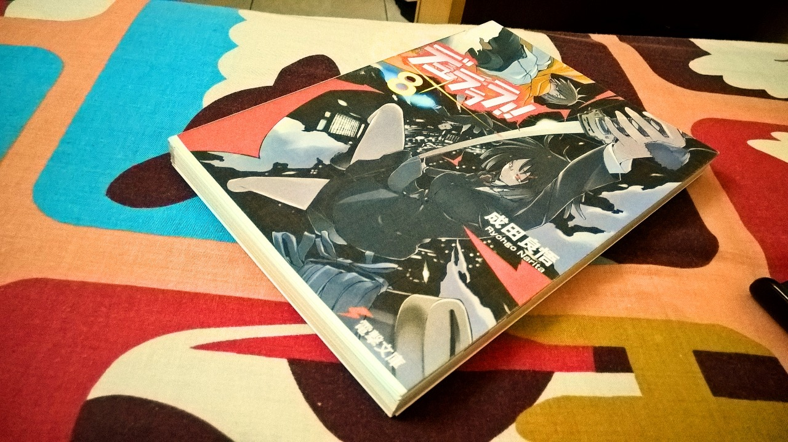 |
I printed the illustration pages on 80gsm A4 paper and the rest on the usual newsprint paper. (p/s : that Anri-chan illustration is lovely >_<) |
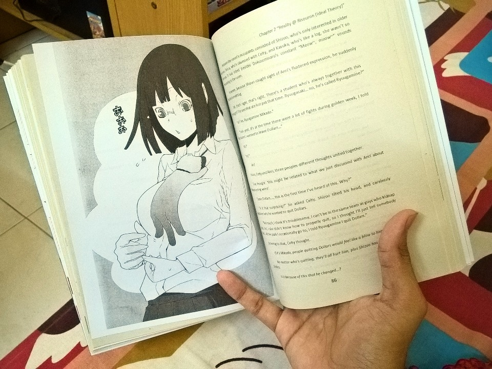 |
With 80gsm A4 paper, I can print the illustration page at full size of the paper, something that I think can’t be done with newsprint paper due to the thinness of the paper. I afraid that the edge of the paper would be damaged if I print it fully on newsprint paper. |
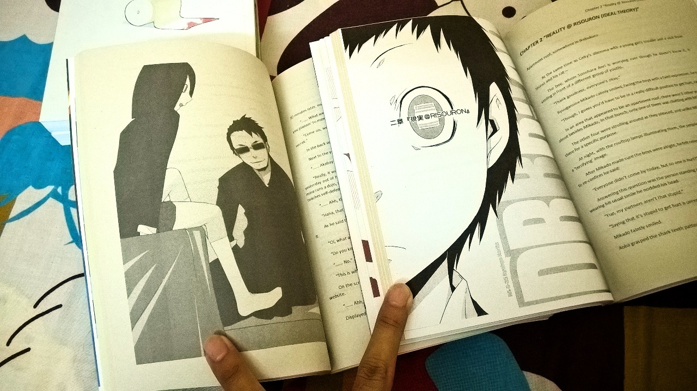 |
Try 6: Hyouka (vol. 1)
Unlike Durarara!!, Hyouka didn’t have any illustration in it. Plus, with fewer pages than Durarara!!, I revert back to 80gsm A4 to print out the book. This time, I made sure to really design the book well. I used Myriad Pro Light, 14pt, bold and italicize for chapter title and Calibri, 10pt with line spacing 1.08 (smaller than Durarara!! design before, but I found it to be perfectly matched with 10pt font size) for the body. Also, I put the page header only at the even-numbered pages and page number as footer at the outside side of the book. Everything seems fine except that I totally miscalculated the sleeve cover size. As a result, the inside part of the sleeve cover are slightly at the outside (totally a bad mistake =.= ). |
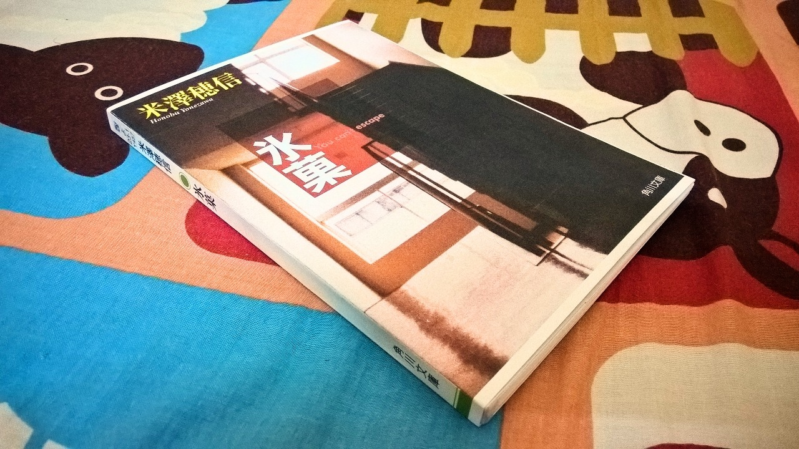 |
Part of the inner side of the sleeve cover are visible on the outside.. Totally miscalculated this =.= |
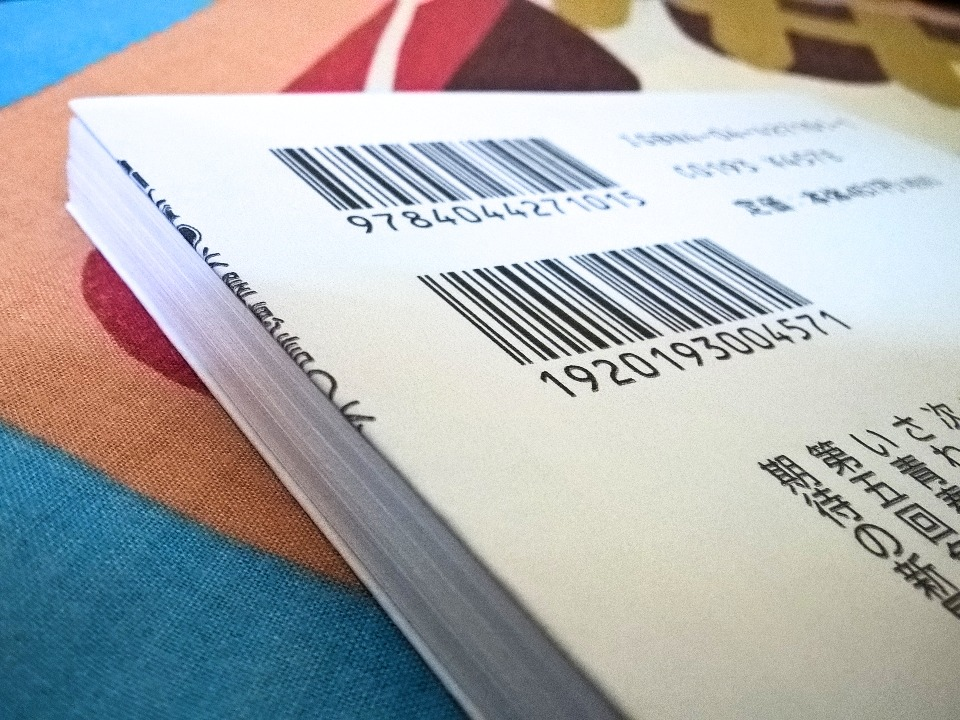 |
Try 7: Hyouka (vol. 2: The Credit Roll of the Fool)
Not much has changed from Hyouka vol. 1. I just made the chapter title a bit bigger with 16pt font. And this time, I carefully calculate the sleeve cover size and have corrected that earlier mistake. |
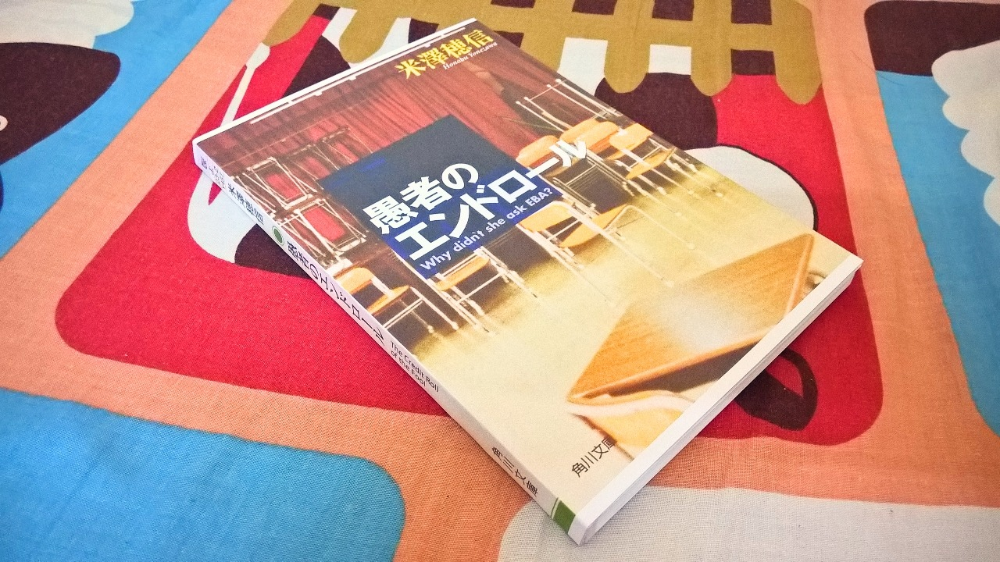 |
Conclusion
So that’s it. All seven books that I’ve designed, printed out and bind - all by myself. Book designing really needs a lot of thinking and experimenting - you need to get a good typeface, you can’t make the font too small, you must got the spacing right so that the readers doesn’t feel choked to see the lines are packed together closely and above all it should pleased the eyes that reads them. Honestly, I’ve lots of fun making all these books - definitely a great experience for me. Oh, and the cost for all these is around... RM50 (original black cartridge) + RM40 (color refill kit) + RM11 (total for all types of paper) + RM3.50 (latex glue) + RM12 (DIY binding kit) = RM116.50 It’s cheap, really. If I were to buy the official books published by Yen Press here in Malaysia, a book will cost me around RM45. So, RM45 x 7 = RM315. I feel really satisfied to see all these books stack up together nicely! |
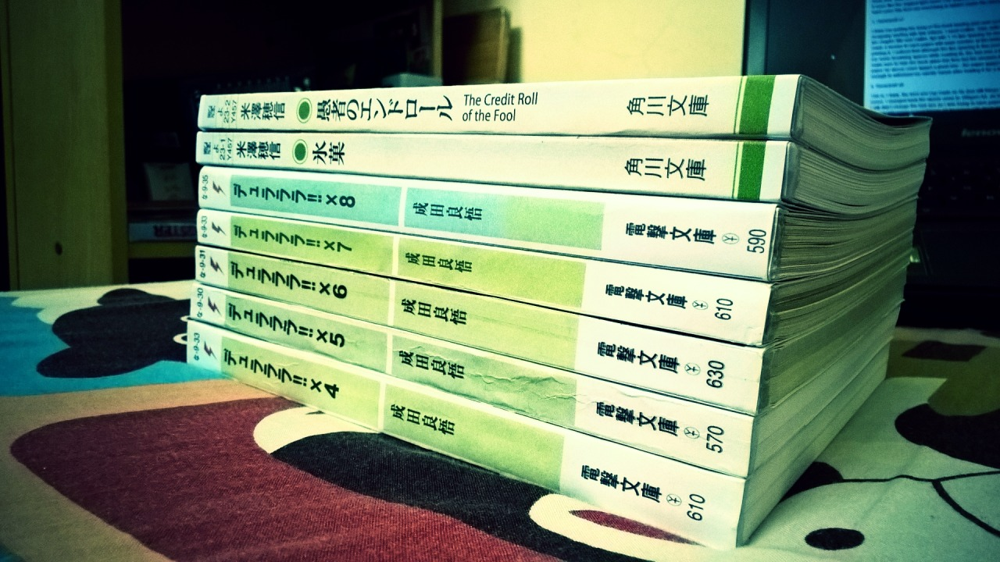 |